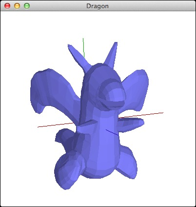

描画オブジェクト階層（OpenGLObjectインヘリタンス）を導入し、プロジェクションオブジェクト（OpenGLProjection）を導入し、JOGL（OpenGL）のためのMVC（モデル・ビュー・コントローラ）を導入して、マウスからの入力とキーボードからの入力を受けつけ、回転や拡大縮小を行えるようにしました。一応、これでプログラムが完成しています。パッケージ「mvc4jogl」をjarファイルにまとめて「mvc4jogl.jar」にし、それをライブラリとして利用するように設え（しつらえ）ましょう。
(cd ~/Downloads/ ; curl -O http://www.cc.kyoto-su.ac.jp/~atsushi/deployment/AP/Java/MVC4JOGL_JOGL_v2.4.tar.gz)(cd ~/Downloads/ ; cat ./MVC4JOGL_JOGL_v2.4.tar.gz ; rm -f ./MVC4JOGL_JOGL_v2.4.tar.gz) | (cd ~/Desktop/ ; tar xvfz - ; xattr -cr ./MVC4JOGL_JOGL_v2.4)(cd ~/Desktop/MVC4JOGL_JOGL_v2.4/ ; make)cp -p ~/Desktop/MVC4JOGL_JOGL_v2.4/mvc4jogl-natives-macosx-universal.jar ~/AP/Java/DragonProgrammingProcess/Dragon_Programming_Process/cp -p ~/Desktop/MVC4JOGL_JOGL_v2.4/mvc4jogl.jar ~/AP/Java/DragonProgrammingProcess/Dragon_Programming_Process/rm -r ~/AP/Java/DragonProgrammingProcess/Dragon_Programming_Process/mvc4jogl/rm ~/AP/Java/DragonProgrammingProcess/Dragon_Programming_Process/gluegen-rt-natives-macosx-universal.jarrm ~/AP/Java/DragonProgrammingProcess/Dragon_Programming_Process/gluegen-rt.jarrm ~/AP/Java/DragonProgrammingProcess/Dragon_Programming_Process/jogl-all-natives-macosx-universal.jarrm ~/AP/Java/DragonProgrammingProcess/Dragon_Programming_Process/jogl-all.jarそして、Apache Antのビルドファイル「build.xml」を以下に示すものと同じになるように編集・加筆してください。編集するところをハイライトで表しておきます。これによって「mvc4jogl.jar」がクラスパスの中に入り、コンパイルやjarファイル生成そしてJavaDoc生成などもできるようになります。これで、jarファイルとして提供されている他のプログラムを利用して、新たなプログラムを作り出すことを学ぶことができました。
【前バージョンからの差分＝変更箇所】【ファイルやディレクトリの増減】 ======================================== Compare: ./Version8 1: dragon/Dragon.java 2: dragon/Example.java 3: mvc4jogl/OpenGLCompound.java 4: mvc4jogl/OpenGLController.java 5: mvc4jogl/OpenGLModel.java 6: mvc4jogl/OpenGLObject.java 7: mvc4jogl/OpenGLPolygon.java 8: mvc4jogl/OpenGLProjection.java 9: mvc4jogl/OpenGLTriangle.java 10: mvc4jogl/OpenGLView.java 11: mvc4jogl/Teapot.java with: ./Version9 1: dragon/Dragon.java 2: dragon/Example.java ======================================== Added (or Removed) files: 3,11d2 < mvc4jogl/OpenGLCompound.java < mvc4jogl/OpenGLController.java < mvc4jogl/OpenGLModel.java < mvc4jogl/OpenGLObject.java < mvc4jogl/OpenGLPolygon.java < mvc4jogl/OpenGLProjection.java < mvc4jogl/OpenGLTriangle.java < mvc4jogl/OpenGLView.java < mvc4jogl/Teapot.java ======================================== 【それぞれのファイルの変更】 ---------------------------------------- Compare: ./Version8/dragon/Dragon.java with: ./Version9/dragon/Dragon.java ---------------------------------------- Result: ---------------------------------------- Compare: ./Version8/dragon/Example.java with: ./Version9/dragon/Example.java ---------------------------------------- Result: ----------------------------------------【前バージョンからの差分＝変更箇所】【ファイルやディレクトリの増減】 ======================================== Compare: ./Version8 1: PrepareJavaNativeInterfaceLibraries.sh 2: build.xml with: ./Version9 1: PrepareJavaNativeInterfaceLibraries.sh 2: build.xml ======================================== Added (or Removed) files: ======================================== 【それぞれのファイルの変更】 ---------------------------------------- Compare: ./Version8/PrepareJavaNativeInterfaceLibraries.sh with: ./Version9/PrepareJavaNativeInterfaceLibraries.sh ---------------------------------------- Result: 11,12c11 < jar xvf gluegen-rt-natives-macosx-universal.jar < jar xvf jogl-all-natives-macosx-universal.jar --- > jar xvf mvc4jogl-natives-macosx-universal.jar ---------------------------------------- Compare: ./Version8/build.xml with: ./Version9/build.xml ---------------------------------------- Result: 5a6 > <property name="mvc4jogl" value="mvc4jogl" /> 7c8 < <property name="packagenames" value="${package},${utility}" /> --- > <property name="packagenames" value="${package},${mvc4jogl},${utility}" /> 38a40 > <pathelement location="${mvc4jogl}.jar" /> 40,41d41 < <pathelement location="gluegen-rt.jar" /> < <pathelement location="jogl-all.jar" /> 51a52 > <zipfileset src="${mvc4jogl}.jar" /> 53,54d53 < <zipfileset src="gluegen-rt.jar" /> < <zipfileset src="jogl-all.jar" /> 58,59c57 < <zipfileset src="gluegen-rt-natives-macosx-universal.jar" /> < <zipfileset src="jogl-all-natives-macosx-universal.jar" /> --- > <zipfileset src="mvc4jogl-natives-macosx-universal.jar" /> 118a117 > <pathelement location="${mvc4jogl}.jar" /> 120,121d118 < <pathelement location="gluegen-rt.jar" /> < <pathelement location="jogl-all.jar" /> ----------------------------------------
<?xml version="1.0" encoding="UTF-8"?>
<project name="Dragon" default="all" basedir=".">
<property name="package" value="dragon" />
<property name="mvc4jogl" value="mvc4jogl" />
<property name="utility" value="utility" />
<property name="packagenames" value="${package},${mvc4jogl},${utility}" />
<property name="destdir" value="./Classes" />
<property name="docdir" value="./JavaDoc" />
<property name="instdir" value="./${ant.project.name}.app/Contents/Resources/Java" />
<property name="copyright" value="Copyright 2008-2017 AOKI Atsushi. All Rights Reserved." />
<property name="zipname" value="${ant.project.name}_Programming_Process" />
<target name="all" depends="jar" description="build all">
<exec executable="date" spawn="false" />
</target>
<target name="prepare" depends="" description="prepare to compile">
<mkdir dir="${destdir}" />
<exec executable="sh" spawn="false">
<arg line=" ./PrepareJavaNativeInterfaceLibraries.sh" />
</exec>
<exec executable="date" spawn="false" />
</target>
<target name="compile" depends="prepare" description="compile all sources">
<javac
fork="true"
srcdir="${basedir}"
destdir="${destdir}"
includeAntRuntime="true"
encoding="UTF-8"
deprecation="on"
verbose="false">
<compilerarg value="-J-Dfile.encoding=UTF8" />
<compilerarg value="-Xlint:all" />
<classpath>
<pathelement location="." />
<pathelement location="${mvc4jogl}.jar" />
<pathelement location="${utility}.jar" />
</classpath>
</javac>
<exec executable="date" spawn="false" />
</target>
<target name="jar" depends="compile" description="make jar file">
<jar
jarfile="${package}.jar"
basedir="${destdir}"
manifest="${package}.mf">
<zipfileset src="${mvc4jogl}.jar" />
<zipfileset src="${utility}.jar" />
</jar>
<jar
jarfile="${package}-natives-macosx-universal.jar">
<zipfileset src="mvc4jogl-natives-macosx-universal.jar" />
</jar>
<exec executable="date" spawn="false" />
</target>
<target name="clean" description="cleaning">
<delete dir="${destdir}" />
<delete file="${package}.jar" />
<delete file="${package}-natives-macosx-universal.jar" />
<delete dir="${docdir}" />
<delete dir="${instdir}" />
<delete file="../${zipname}.zip" />
<delete>
<fileset dir="${package}" includes="*.class" />
</delete>
<delete dir="natives" />
<exec executable="date" spawn="false" />
</target>
<target name="test" depends="all" description="test">
<exec executable="java" spawn="false">
<arg line="-Dfile.encoding=UTF-8 -Xmx512m -Xss1024k -jar ${package}.jar" />
</exec>
<exec executable="date" spawn="false" />
</target>
<target name="install" depends="all" description="install into application">
<copy file="${package}.jar" todir="${instdir}" />
<copy file="${package}-natives-macosx-universal.jar" todir="${instdir}" />
<copy todir="${instdir}/natives">
<fileset dir="natives" />
</copy>
<exec executable="chmod">
<arg line="755 ${instdir}/../../MacOS/applet" />
</exec>
<exec executable="touch">
<arg line="${ant.project.name}.app" />
</exec>
<exec executable="date" spawn="false" />
</target>
<target name="doc" depends="all" description="make document (javadoc)">
<mkdir dir="${docdir}" />
<javadoc
locale="ja_JP"
sourcepath="${basedir}"
destdir="${docdir}"
packagenames="${packagenames}"
author="true"
version="true"
charset="UTF-8"
encoding="UTF-8"
docencoding="UTF-8"
linksource="yes"
additionalparam="-J-Dfile.encoding=UTF-8"
access="private">
<doctitle>${doc-title}</doctitle>
<bottom>${copyright}</bottom>
<classpath>
<pathelement location="." />
<pathelement location="${mvc4jogl}.jar" />
<pathelement location="${utility}.jar" />
</classpath>
</javadoc>
<exec executable="open">
<arg line="${docdir}/index.html" />
</exec>
<exec executable="date" spawn="false" />
</target>
<target name="zip" depends="clean" description="make zip file">
<delete file="../${zipname}.zip" />
<zip destfile="../${zipname}.zip">
<zipfileset dir="." prefix="${zipname}" />
</zip>
<exec executable="date" spawn="false" />
</target>
</project>
#!/bin/sh
boolean="none"
for each in `ls -1 ./natives/macosx-universal/*.dylib 2> /dev/null`
do
boolean="exists"
done
if [ "$boolean" = "none" ]
then
jar xvf mvc4jogl-natives-macosx-universal.jar
rm -rf META-INF
rm -rf jogamp
fi
exit 0
dragon.Dragon（以前に示したものと同様ゆえに省略）
…
dragon.Example（以前に示したものと同様ゆえに省略）
…
ではでは、実行してみましょう。その前に、JARファイルが変わりましたので、払拭（wipe）した後、実行（test）してください。結果が上手くいったのならば、これにて完了です。お疲れさまでした。ご苦労さまでした。
$ make wipe test
env LC_ALL=ja_JP.UTF-8 ant clean
Picked up _JAVA_OPTIONS: -Dfile.encoding=UTF-8
Buildfile: /Users/aoki/Developments/Languages/Java/Dragon/Version9/build.xml
clean:
[delete] Deleting directory /Users/aoki/Developments/Languages/Java/Dragon/Version9/Classes
[delete] Deleting: /Users/aoki/Developments/Languages/Java/Dragon/Version9/dragon.jar
[delete] Deleting: /Users/aoki/Developments/Languages/Java/Dragon/Version9/dragon-natives-macosx-universal.jar
[delete] Deleting directory /Users/aoki/Developments/Languages/Java/Dragon/Version9/natives
[exec] 2019年 12月27日 金曜日 19時52分12秒 JST
BUILD SUCCESSFUL
Total time: 0 seconds
env LC_ALL=ja_JP.UTF-8 ant test
Picked up _JAVA_OPTIONS: -Dfile.encoding=UTF-8
Buildfile: /Users/aoki/Developments/Languages/Java/Dragon/Version9/build.xml
prepare:
[mkdir] Created dir: /Users/aoki/Developments/Languages/Java/Dragon/Version9/Classes
[exec] Picked up _JAVA_OPTIONS: -Dfile.encoding=UTF-8
[exec] META-INF/が作成されました
[exec] META-INF/MANIFEST.MFが展開されました
[exec] jogamp/が作成されました
[exec] jogamp/nativetag/が作成されました
[exec] jogamp/nativetag/common/が作成されました
[exec] jogamp/nativetag/common/macosx/が作成されました
[exec] jogamp/nativetag/common/macosx/universal/が作成されました
[exec] jogamp/nativetag/common/macosx/universal/TAG.classが展開されました
[exec] natives/が作成されました
[exec] natives/macosx-universal/が作成されました
[exec] natives/macosx-universal/libgluegen-rt.dylibが展開されました
[exec] jogamp/nativetag/opengl/が作成されました
[exec] jogamp/nativetag/opengl/macosx/が作成されました
[exec] jogamp/nativetag/opengl/macosx/universal/が作成されました
[exec] jogamp/nativetag/opengl/macosx/universal/TAG.classが展開されました
[exec] natives/macosx-universal/libjogl_desktop.dylibが展開されました
[exec] natives/macosx-universal/libjogl_mobile.dylibが展開されました
[exec] natives/macosx-universal/libnativewindow_awt.dylibが展開されました
[exec] natives/macosx-universal/libnativewindow_macosx.dylibが展開されました
[exec] natives/macosx-universal/libnewt.dylibが展開されました
[exec] 2019年 12月27日 金曜日 19時52分15秒 JST
compile:
[javac] Compiling 2 source files to /Users/aoki/Developments/Languages/Java/Dragon/Version9/Classes
[javac] Picked up _JAVA_OPTIONS: -Dfile.encoding=UTF-8
[exec] 2019年 12月27日 金曜日 19時52分16秒 JST
jar:
[jar] Building jar: /Users/aoki/Developments/Languages/Java/Dragon/Version9/dragon.jar
[jar] Building jar: /Users/aoki/Developments/Languages/Java/Dragon/Version9/dragon-natives-macosx-universal.jar
[exec] 2019年 12月27日 金曜日 19時52分17秒 JST
all:
[exec] 2019年 12月27日 金曜日 19時52分17秒 JST
test:
[exec] Picked up _JAVA_OPTIONS: -Dfile.encoding=UTF-8
[exec] 2019年 12月27日 金曜日 19時52分24秒 JST
BUILD SUCCESSFUL
Total time: 10 seconds
$
